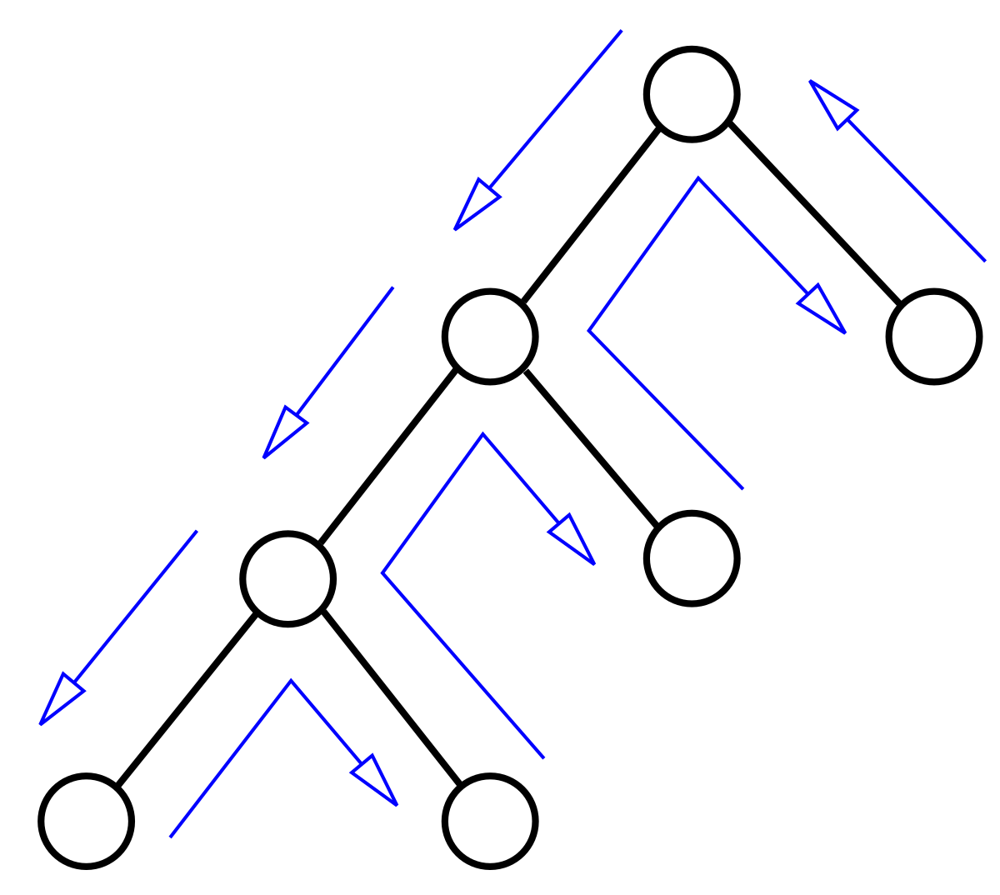

Méthodes du Sudoku
Ce premier algorithme remplie les grilles selon les méthodes suivantes :
- Singleton nu
- Singleton caché
- Paires nues
- Paires cachées
C'est une méthode rapide et efficace sur des grilles simples et basiques
Méthode du backtracking
Cette méthode permet de rempir n'importe quelle grille de Sudoku (solvable) c'est une méthode efficace mais très lente
Code source définitf
Ce programme permet de remplir des grilles en format 4x4, il se base sur les méthodes de singleton et de paires et termine la complétion de la grille avec du backtracking. C'est un programme très rapide pour des grilles simples et plutôt lent pour des grilles avancées